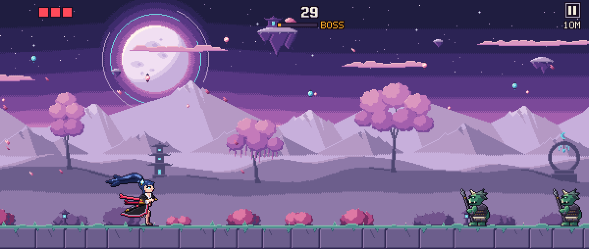

Moon Owl Games présente
Katana Race
Un runner d'action pour téléphone, en paysage, à deux pouces. Une partie dure d'une à trois minutes.

- Tape à gauche pour sauter.
- Tape à droite pour trancher, ou pour parer au bon moment.
- Enchaîne les coups : la lame s'embrase, la course accélère, et un boss barre la route environ toutes les 30 secondes.
- Des tenues et des lames à débloquer au Dojo.
Bientôt sur Google PlayPolitique de confidentialité
Moon Owl Games
Moon Owl Games est le studio derrière Katana Race.
Contact : blmcontactpro1@gmail.com